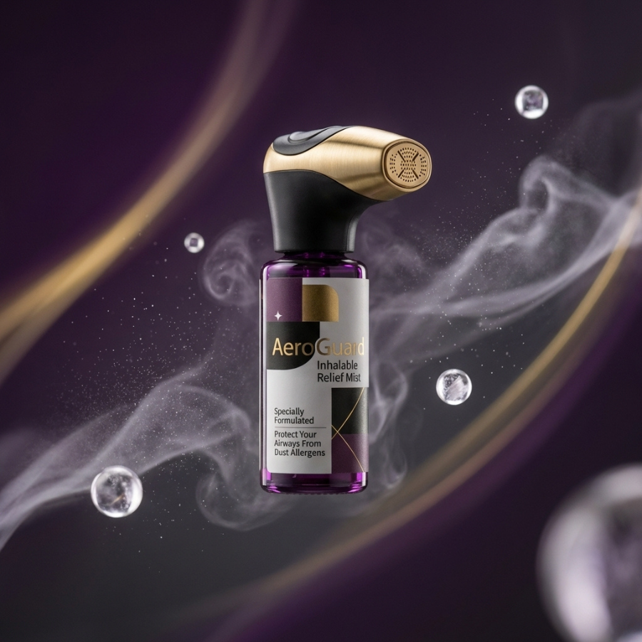
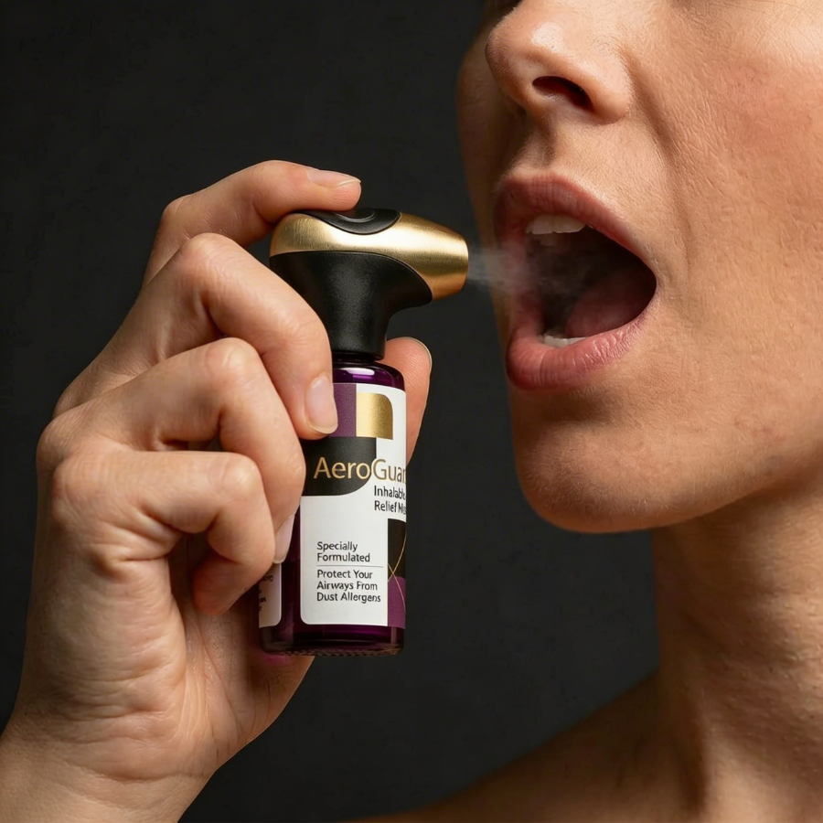

AeroGuard
Fine, inhalable mist gently coats throat and upper airways.
Fine mist contains antibodies engineered to neutralize dust allergens before they trigger irritation.
Drug-free, nontoxic, and safe for daily use.

Every day you inhale tens of billions (sometimes trillions) of microscopic dust-mite allergen molecules. Even a single breath can contain millions of allergens.
These allergens linger in your airways and cause inflammation, respiratory issues, asthmatic flare-ups, and other unpleasant symptoms.
Modern solutions against dust-mite allergens are slow-to-act, ineffective, or have side effects. If anything, they treat the symptoms, but not the cause.
Founded by a team of Harvard scientists, AeroBlock Alpha is a specially engineered protein that targets Der p 1 and Der p 2 allergens: the main culprits behind dust allergies.
After making contact with your airways, AeroBlock Alpha immediately shuts down lingering dust allergens that you previously inhaled. It then remains and coats your airways for up to 24 hours. It's completely harmless and unnoticeable, naturally dissipating over time.
Frequently Asked Questions
AeroGuard uses a proprietary antibody blend in a saline solution. Our formula is preservative-free and designed for daily use.
1. Shake the bottle gently.
2. Hold the device upright and point the nozzle toward the back of your mouth and throat.
3. Press down on the dispenser to release 2-3 sprays to the throat.
4. Take a slow, gentle breath in through your mouth to allow the fine mist to settle across your throat and upper airways. No need to spit out.
Apply two or three daily sprays for maximum protection.
Unlike antihistamines that mask symptoms, AeroGuard's antibody technology neutralizes 76% of dust allergens, targeting the problem at the source. It is steroid-free and non-drowsy.

I didn't expect much but this actually works. The night I started using this, I had no congestion or dust allergies whatsoever.
— Evan M.
Super easy to use and surprisingly gentle. Doesn't burn like other things you're meant to inhale.
— Gary P.
If this were a bit cheaper I'd probably keep ordering, but maybe every other month now. It's been helping my husband with his snoring a ton, since he's usually completely clogged because of the dust around our bedroom. Being able to get to the root cause and add a layer of defense to his airways definitely helped.
— Sasha L.
My son's been super allergic to dust his entire life, and this has made a huge difference for him! I used to get him allergy pills but he hated taking them, this is a bit more manageable for him. He actually has fun using it. Sincerely, a thankful mother of 3 <3
— Nancy A.
I keep one in my bag for when I travel. Hotels and airplanes always trigger my dust allergies, so this has been really convenient.
— Sue Q.
Sign up for early access to new formulations and exclusive discounts.
By subscribing, you agree to receive marketing emails from Pacagen Inc.